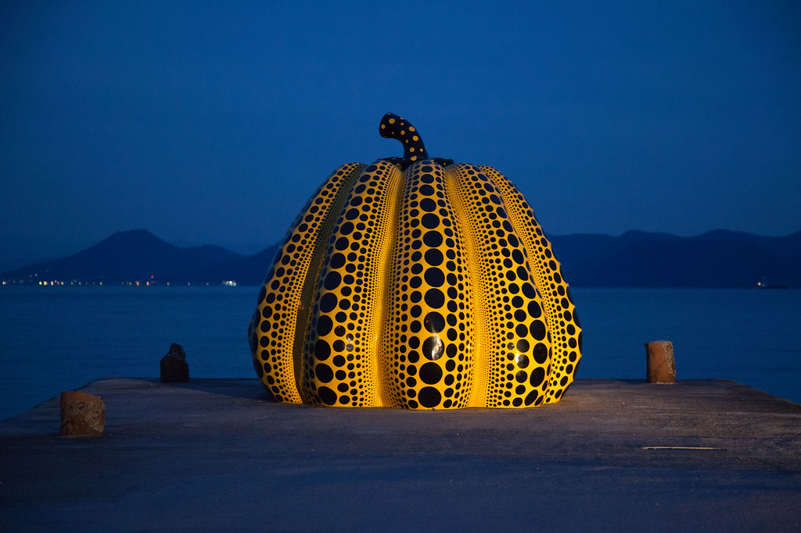

A two-hour course / seven lessons / for a trip to Japan
Six artists, one country, many Japans.
Kusama 路 Miyake 路 Kawakubo 路 Yamamoto 路 Nara 路 Murakami

The route
Chronological, because the story is better that way: the post-war generation first, then the pop generation. Each lesson is self-contained. Do one a day, or all seven in one sitting.
Total: about 120 minutes, including the quizzes and the videos.
The reference shelf
Keep these open while you travel. They are designed to be printed, or read on a phone in a museum queue.
How to use this
If you have two hours
Do the seven lessons in order. Keep a notebook with one sentence per artist. Take the quizzes once, without looking back. Then read the timeline as a recap.
If you have seven days
Do one lesson a day. The night before, watch the video. The next morning, read the reference sheet for the city you are visiting. At the museum, use the five questions, not the audio guide.
If you are already in Japan
Start with 鈥淲here to see them鈥? pick one venue per city, and read only the lesson for that artist. The lessons are self-contained; the synthesis can wait until the flight home.
What this course is not
It is not a price guide, a complete history, or a substitute for looking. The point is to give you enough context to have a real reaction 鈥?and then to go and have it.
Three things you will recognise


Mission: why this course exists 路 Sources: RESOURCES.md 路 Image credits: assets/CREDITS.md 路 Working notes: NOTES.md